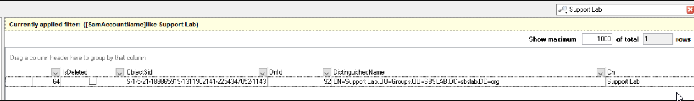

Summary: Instructions on how to add additional security groups to the AD_SensitiveSecurityGroups job/report.
Issue: Customer would like to add additional security groups to the sensitive security group report. By default, this report includes Enterprise Admins, Domain Admins, Schema Admins, DNS Admins.
Instructions:
- Navigate to ".Active Directory Inventory > 1_AD_Scan > Results > ADInventory_GroupsView"
- Click the magnify glass in the upper right hand corner and select "SamAccountName"
- Enter the group name that you want to add to the Sensitive Security Group and hit "Enter"
- Scroll over until you find "ObjectSid" and copy it to the clipboard.

- Navigate to Active Directory > 1.Groups > AD_SensitiveSecurityGroups
- Expand AD_SensitiveSecurityGroups job
- Expand Configure and click Analysis
- Open the "Calculate Effective Membership" analysis and click "Configure Analysis".
-
On Line 12, you will find the following:
ORIGINAL: INSERT INTO #SIDs (Value) VALUES ('S-1-5-21%-512'), ('S-1-5-21%-519'), ('S-1-5-21%-518')
ADD: Add/paste the additional SID to the end up this line in the following format ",('SID')"
AS AN EXAMPLE: , ('S-1-5-21-189865919-1311902141-2254347052-1143')
FINAL RESULT: INSERT INTO #SIDs (Value) VALUES ('S-1-5-21%-512'), ('S-1-5-21%-519'), ('S-1-5-21%-518'), ('S-1-5-21-189865919-1311902141-2254347052-1143')
- Once complete, click "Save and Close" and click "Save".
- Rerun the AD_SensitiveSecurityGroups job and the new group should appear in the report.
Product: StealthAUDIT
Module: SA - DC - Active Directory
Versions: 8.0+
Legacy Article ID: 2317